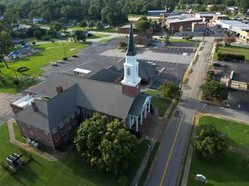
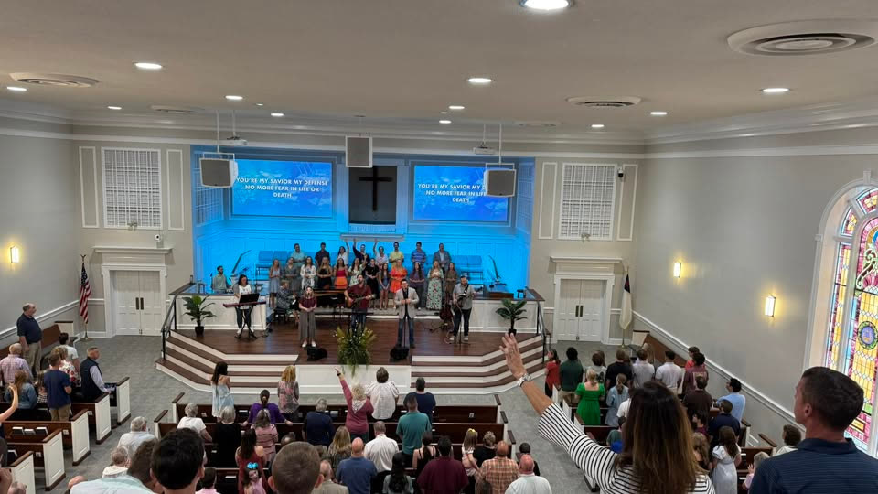
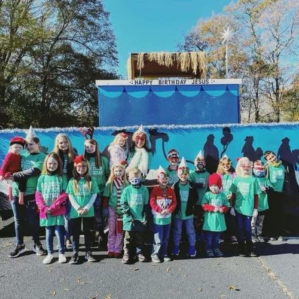
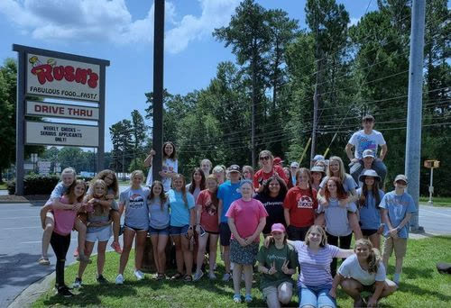

laid May 7

152 years of showing up for this town.
Honea Path First Baptist was founded on May 7, 1869. Since then, this congregation has stood through Reconstruction, the Great Depression, two World Wars, and, more recently, 9/11 and the COVID-19 pandemic. Through all of it, God has been faithful.
Decade after decade, this church has sought to fulfill the Great Commission Jesus gave His followers — reaching the nations, locally and around the world, with the gospel and making disciples of all peoples.

Go therefore and make disciples…
The mission of Honea Path First Baptist is the same mission Jesus gave His followers: go and make disciples of all nations, baptizing them in the name of the Father, the Son, and the Holy Spirit.
Our vision is to build a community of authentic believers and to witness this city transformed by the life-changing reality of the gospel, as people come to know Jesus as Lord and Savior.
Connect With Us"What comes into our minds when we think about God is the most important thing about us."
— A.W. Tozer. Our core beliefs are rooted in the foundational truths taught in scripture, and everything we teach flows out of them.
One God, three persons
Father, Son, and Holy Spirit — the eternal creator of all that exists, perfect in love, holiness, and mercy, unchanging from yesterday to today.
God makes Himself known
Through His Son Jesus Christ, the visible image of the invisible God, through Holy Scripture, and through all of creation itself.
Made in His image
Adam and Eve were created without sin, for God's glory, and appointed as caretakers of the rest of creation.
A fracture in fellowship
Disobedience cost humanity its fellowship with God, distorting His image in us and fracturing creation ever since.
Found in Christ alone
Jesus lived a sinless life and died to pay the penalty for our sin. Raised from the dead, He offers eternal life by grace, through faith.
The body of Christ
Sent into the world to glorify God and proclaim the gospel — not a building, but a people on mission.
He is coming again
Jesus Christ will return to judge the living and the dead, and to usher in the fullness of God's kingdom on earth.
Something for every season of life.

Kids
Age-appropriate teaching and worship that helps children build a lasting foundation of faith.

Youth
A home base for middle and high schoolers to grow in community, study, and service together.
Sunday School
Small groups for every age, digging into scripture together before the morning worship service.
College & Career
For young adults navigating a new season, staying rooted in scripture and real relationships.
Men & Women
Gender-specific groups built around scripture, prayer, and doing life alongside one another.
Missions
Reaching Honea Path and the nations — local outreach and global partnerships, side by side.
The people behind the pulpit — and everywhere else.
Pastors, staff, and ministry leaders who show up week after week to shepherd this congregation and keep it running.
Dr. Josh Phillips
Senior PastorTravis Dyar
Associate Pastor of Youth & UniversityBen Smith
Worship PastorMelanie Hahn
Children's DirectorAllyson Walker
Administrative AssistantTammy Jo Welch
Office Assistant & Media CoordinatorSam Gilmer
MediaBrandon Hawkins
MissionsJim Jones
Senior Adult MinistriesStar Witness — Romans 4:1–12
Missed a Sunday, or want to revisit a message? Every service is archived and streamed live so you can worship with us from anywhere.
Watch Live on YouTubeWe'd love to meet you Sunday.
Fill out the form and someone from our welcome team will follow up — or just show up. Either way, you're welcome here.
Service Times
100 S. Main St, Honea Path, SC 29654 — parking available on-site and along Main St.
Get DirectionsAdministrative Committee Minutes
Recent meeting minutes from the Administrative Committee, available for church members.